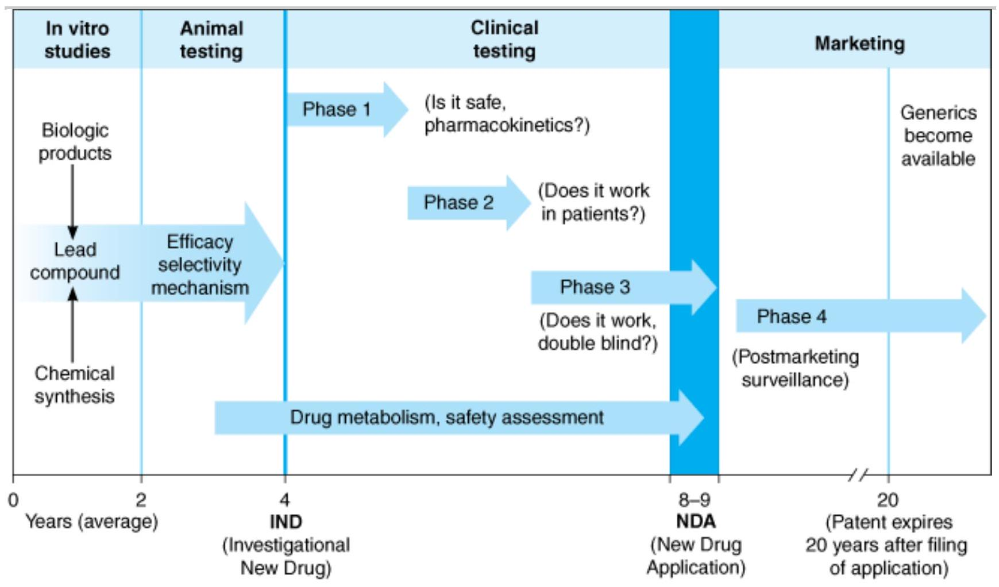

DEVELOPMENT & REGULATI ON OF DRUGS
New drugs have revolutionized the practice of medicine, converting many once fatal or debilitating diseases into manageable therapeutic exercises. For example, deaths from cardiovascular disease, the main cause of death in the USA, and from stroke have decreased by more than 50% in the USA over the past 30 years. This decline is due—in part—to the discovery and increased use of antihypertensives, cholesterol synthesis inhibitors, drugs that prevent or dissolve blood clots, medical devices, and drug-releasing stents.
Among the first steps in the development of a new drug is the discovery or synthesis of a potential new drug molecule and seeking an understanding of its interaction (mechanism) with the appropriate biologic targets. Repeated application of this approach leads to compounds with increased potency and selectivity (Figure 5-1). By law, the safety and efficacy of drugs must be defined before marketing. In addition to in vitro studies, relevant biologic effects, drug metabolism, and pharmacokinetic profiles and particularly an assessment of the relative safety of the drug must be characterized in animals before human drug trials can be started. With regulatory approval, human testing can then go forward in three phases before the drug can be considered for approval for general use. A fourth phase of data gathering and safety monitoring is becoming increasingly important and follows after approval for general use.
Copyright ©2006 by The McGraw-Hill Companies, Inc. All rights reserved.
The development and testing process required to bring a drug to market in the USA. Some of the requirements may be different for drugs used in life-threatening diseases.
Enormous and increasing costs, with estimates from 150 million to 900 million, are involved in the research and development of a single new drug that reaches the marketplace. Only 3 of 10 marketed drugs return their research and development (R&D) investments, thus providing considerable motivation to develop "blockbusters." Thousands of compounds may be synthesized and hundreds of thousands tested from libraries of compounds for each successful new drug lead, which then generally needs to be further optimized for reasons of potency, selectivity, drug metabolism, and dosing convenience before each drug reaches the market. Because of the economic investment required and the need to efficiently access multiple technologies, most new drugs are developed in pharmaceutical companies.
At the same time, the incentives to succeed in drug development can be equally enormous. The global market for pharmaceuticals in 2006 is estimated at about 640 billion. The 2004 sales of the top-selling drug worldwide (Lipitor) exceeded 10 billion. During the second half of the 20th century, estimates indicate that medications produced by the pharmaceutical industry saved more than 1.5 million lives and 140 billion in the costs of treatment for tuberculosis, poliomyelitis, coronary artery disease, and cerebrovascular disease alone. New drugs played a key role in the post-1995 decline in HIV mortality and the social returns for HIV drug innovation appear to be extremely large. In the USA, approximately 10% of the health care dollar is presently spent on prescription drugs.
DRUG DI SCOVERY
Most new drugs or drug products are discovered or developed through one or more of six approaches:
- 1. Identification or elucidation of a new drug target
- 2. Rational drug design of a new drug based on an understanding of biologic mechanisms, drug receptor structure, and drug structure
- 3. Chemical modification of a known molecule
- 4. Screening for biologic activity of large numbers of natural products, banks of previously discovered chemical entities, and large libraries of peptides, nucleic acids, and other organic molecules
- 5. Biotechnology and cloning using genes to produce peptides and proteins. Efforts continue to focus on the discovery of new targets and approaches, from studies with genomics, proteomics, nucleic acids and molecular pharmacology for drug therapy. Significantly increasing the number of useful disease targets should be a positive driver for new and improved drugs.
- 6. Combinations of known drugs to obtain additive or synergistic effects or a repositioning of a known drug for a new therapeutic use.
Drug Screening
Regardless of the source or the key idea leading to a drug candidate molecule, testing it involves a sequence of iterative experimentation and characterization called drug screening. A variety of biologic assays at the molecular, cellular, organ system, and whole animal levels are used to define the activity and selectivity of the drug (Table 5-1). The type and number of initial screening tests depend on the pharmacologic and therapeutic goal. Anti-infective drugs may be tested against a variety of infectious organisms some of which are resistant to standard agents, hypoglycemic drugs for their ability to lower blood sugar, etc. In addition, the molecule will also be studied for a broad array of other actions to establish the mechanism of action and selectivity of the drug. This has the advantage of demonstrating both suspected and unsuspected toxic effects. Occasionally, an unsuspected therapeutic action is serendipitously discovered by the careful observer. The selection of molecules for further study is most efficiently conducted in animal models of human disease. Where good predictive preclinical models exist (eg, antibacterials, hypertension or thrombotic disease), we generally have adequate drugs. Good drugs or breakthough improvements are conspicuously lacking and slow for diseases for which pre-clinical models are poor, or not yet available, eg, Alzheimer's disease.
| Experimental Method or Target Organ | Species or Tissue | Measurement |
|---|---|---|
| Molecular | ||
| Receptor binding (example: B-adrenoceptors) | Cell membrane fractions from organs or cultured cells; cloned receptors | Receptor affinity and selectivity |
| Enzyme activity (examples: tyrosine hydroxylase, dopamine-3-hydroxylase, monoamine oxidase) | Sympathetic nerves; adrenal glands; purified enzymes | Enzyme inhibition and selectivity |
| Cytochrome P450 | Liver | Enzyme inhibition; effects on drug metabolism |
| Cellular | ||
| Cell function | Cultured cells | Evidence for receptor activity—agonism or antagonism (example: effects on cyclic nucleotides) |
| Isolated tissue | Blood vessels, heart, lung, ileum (rat or guinea pig) | Effects on vascular contraction and relaxation; selectivity for vascular receptors; effects on other smooth muscles |
| Systems/ disease models | ||
| Blood pressure | Dog, cat (anesthetized) | Systolic-diastolic changes |
| Rat, hypertensive (conscious) | Antihypertensive effects | |
| Cardiac effects | Dog (conscious) | Electrocardiography |
| Dog (anesthetized) | Inotropic, chronotropic effects, cardiac output, total peripheral resistance | |
| Peripheral autonomic nervous system | Dog (anesthetized) | Effects on response to known drugs and electrical stimulation of central and peripheral autonomic nerves |
| Respiratory effects | Dog, guinea pig | Effects on respiratory rate and amplitude, bronchial tone |
| Diuretic activity | Dog | Natriuresis, kaliuresis, water diuresis, renal blood flow, glomerular filtration rate |
| Gastrointestinal effects | Rat | Gastrointestinal motility and secretions |
| Circulating hormones, cholesterol, blood sugar | Rat, dog | Serum concentration |
| Blood coagulation | Rabbit | Coagulation time, clot retraction, prothrombin time |
| Central nervous system | Mouse, rat | Degree of sedation, muscle relaxation, locomotor activity, stimulation |
Studies are performed during drug screening to define the pharmacologic profile of the drug at the molecular, cellular, system, organ, and organism levels. For example, a broad range of tests would be performed on a drug designed to act as an antagonist at vascular a-adrenoceptors for the treatment of hypertension.
At the molecular level, the compound would be screened for receptor binding affinity to cell membranes containing areceptors (if possible on human receptors), other receptors, and binding sites on enzymes. If crystal structures of the drug and target are available, structural biology analyses or computer-assisted virtual screening might be done to better understand the drug receptor interaction. Early studies would be done to predict effects that might later cause undesired drug metabolism or toxicologic complications. For example, studies on liver cytochrome P450 enzymes would be performed to determine whether the drug of interest is likely to be a substrate or inhibitor of these enzymes or to interfere with the metabolism of other drugs. Effects on cardiac ion channels such as the hERG potassium channel, possibly predictive of life threatening arrhythmias, would be considered.
Effects on cell function would be studied to determine whether the drug is an agonist, partial agonist, or antagonist at areceptors. Isolated tissues, especially vascular smooth muscle, would be utilized to characterize the pharmacologic activity and selectivity of the new compound in comparison with reference compounds. Comparison with other drugs would also be undertaken in other in vitro preparations such as gastrointestinal and bronchial smooth muscle. At each step in this process, the compound would have to meet specific performance criteria to be carried further.
Whole animal studies are generally necessary to determine the effect of the drug on organ systems and disease models. Cardiovascular and renal function studies of all new drugs are generally first performed in normal animals. Where appropriate, studies on disease models would be performed. For a candidate antihypertensive drug, animals with hypertension would be treated to see if blood pressure was lowered in a dose-related manner and to characterize other effects of the compound. Evidence would be collected on duration of action and efficacy following oral and parenteral administration. If the agent possessed useful activity, it would be further studied for possible adverse effects on other major organ systems, including the respiratory, gastrointestinal, endocrine, and central nervous systems.
These studies might suggest the need for further chemical modification to achieve more desirable pharmacokinetic or pharmacodynamic properties. For example, oral administration studies might show that the drug was poorly absorbed or rapidly metabolized in the liver; modification to improve bioavailability might be indicated. If the drug was to be administered long-term, an assessment of tolerance development would be made. For drugs related to or having mechanisms of action similar to those known to cause physical dependence, abuse potential would also be studied. For each major action found, a pharmacologic mechanism would be sought.
The desired result of this screening procedure (which may have to be repeated several times with analogs or congeners of the original molecules) is called a lead compound, ie, a leading candidate for a successful new drug. A patent application would generally be filed for a novel compound (a composition of matter patent) that is efficacious, or for a new and nonobvious therapeutic use (a use patent) for a previously known chemical entity.
PRECLI NI CAL SAFETY & TOXI CI TY TESTI NG
All drugs are toxic at some dose. Seeking to correctly define the limiting toxicities of drugs and the therapeutic index comparing benefits and risks of a new drug might be argued as the most essential part of the new drug development process. Most drug candidates fail to reach the market, but the art of drug discovery and development is the effective assessment and management of risk and not total risk avoidance.
Candidate drugs that survive the initial screening and profiling procedures must be carefully evaluated for potential risks before and during clinical testing. Depending on the proposed use of the drug, preclinical toxicity testing includes most or all of the procedures shown in Table 5-2. Although no chemical can be certified as completely "safe" (free of risk), the objective is to estimate the risk associated with exposure to the drug candidate and to consider this in the context of therapeutic needs and duration of likely drug use.
| Type of Test | Approach |
|---|---|
| Acute toxicity | |
| Acute dose that is lethal in approximately 50% of animals and the maximum tolerated dose. Usually two species, two routes, single dose. | |
| Subacute toxicity | Three doses, two species. 4 weeks to 3 months may be necessary prior to clinical trial. The longer the duration of expected clinical use, the longer the subacute test. |
| Chronic toxicity | Rodent and non-rodent species. 6 months or longer. Required when drug is intended to be used in humans for prolonged periods. Usually run concurrently with clinical trial. |
| Effect on reproductive performance | Effects on animal mating behavior, reproduction, parturition, progeny, birth defects, postnatal development. |
| Carcinogenic potential | Two years, two species. Required when drug is intended to be used in humans for prolonged periods. |
| Mutagenic potential | Effects on genetic stability and mutations in bacteria (Ames test) or mammalian cells in culture; dominant lethal test and clastogenicity in mice. |
| Investigative toxicology | Determine sequence and mechanisms of toxic action. Discover the genes, proteins, pathways involved. Develop new methods for assessing toxicity. |
The goals of preclinical toxicity studies include identifying potential human toxicities; designing tests to further define the toxic mechanisms; and predicting the specific and the most relevant toxicities to be monitored in clinical trials. In addition to the studies shown in Tables 5-1 and 5-2, several quantitative estimates are desirable. These include the "no-effect" dose—the maximum dose at which a specified toxic effect is not seen; the minimum lethal dose—the smallest dose that is observed to kill any experimental animal; and, if necessary, the median lethal dose ( $\mathbf{L} \mathbf{D}_{\mathbf{5 0}}$ )—the dose that kills approximately 50% of the animals. Presently, the $\mathrm{LD}_{50}$ is estimated from the smallest number of animals possible. These doses are used to calculate the initial dose to be tried in humans, usually taken as one hundredth to one tenth of the no-effect dose in animals.
It is important to recognize the limitations of preclinical testing. These include the following:
- 1. Toxicity testing is time-consuming and expensive. Two to 6 years may be required to collect and analyze data on toxicity and estimates of therapeutic index (a comparison of the amount that causes the desired therapeutic effect to the amount that causes toxic effects, see Chapter 2) before the drug can be considered ready for testing in humans.
- 2. Large numbers of animals may be needed to obtain valid preclinical data. Scientists are properly concerned about this situation, and progress has been made toward reducing the numbers required while still obtaining valid data. Cell and tissue culture in vitro methods are increasingly being used, but their predictive value is still severely limited. Nevertheless, some segments of the public attempt to halt all animal testing in the unfounded belief that it has become unnecessary.
- 3. Extrapolations of therapeutic index and toxicity data from animals to humans are reasonably predictive for many but not for all toxicities. Seeking an improved process, a Predictive Safety Testing Consortium of five of America's largest pharmaceutical companies with an advisory role by the Food and Drug Administration (FDA) has been formed to share internally developed laboratory methods to predict the safety of new treatments before they are tested in humans.
- 4. For statistical reasons, rare adverse effects are unlikely to be detected.
EVALUATION IN HUMANS
Less than one third of the drugs tested in clinical trials reach the marketplace. Federal law in the USA and ethical considerations require that the study of new drugs in humans be conducted in accordance with stringent guidelines. Scientifically valid results are not guaranteed simply by conforming to government regulations, however, and the design and execution of a good clinical trial require interdisciplinary personnel including basic scientists, clinical pharmacologists, clinician specialists, statisticians, and frequently others. The need for careful design and execution is based on three major confounding factors inherent in the study of any drug in humans.
Confounding Factors in Clinical Trials
THE VARIABLE NATURAL HISTORY OF MOST DISEASES
Many diseases tend to wax and wane in severity; some disappear spontaneously, even, on occasion, malignant neoplasms. A good experimental design takes into account the natural history of the disease by evaluating a large enough population of subjects over a sufficient period of time. Further protection against errors of interpretation caused by disease fluctuations is provided by using a crossover design, which consists of alternating periods of administration of test drug, placebo preparation (the control), and the standard treatment (positive control), if any, in each subject. These sequences are systematically varied, so that different subsets of patients receive each of the possible sequences of treatment.
THE PRESENCE OF OTHER DISEASES AND RISK FACTORS
Known and unknown diseases and risk factors (including lifestyles of subjects) may influence the results of a clinical study. For example, some diseases alter the pharmacokinetics of drugs (see Chapters 3 and 4). Concentrations of a blood or tissue component being monitored as a measure of the effect of the new agent may be influenced by other diseases or other drugs. Attempts to avoid this hazard usually involve the crossover technique (when feasible) and proper selection and assignment of patients to each of the study groups. This requires obtaining accurate medical and pharmacologic histories (including use of recreational drugs) and the use of statistically valid methods of randomization in assigning subjects to particular study groups.
SUBJ ECT AND OBSERVER BIAS
Most patients tend to respond in a positive way to any therapeutic intervention by interested, caring, and enthusiastic medical personnel. The manifestation of this phenomenon in the subject is the placebo response (Latin, "I shall please") and may involve objective physiologic and biochemical changes as well as changes in subjective complaints associated with the disease. The placebo response is usually quantitated by administration of an inert material, with exactly the same physical appearance, odor, consistency, etc, as the active dosage form. The magnitude of the response varies considerably from patient to patient and may also be influenced by the duration of the study. Placebo adverse effects and "toxicity" also occur but usually involve subjective effects: stomach upset, insomnia, sedation, etc.
Subject bias effects can be quantitated—and minimized relative to the response measured during active therapy—by the single-blind design. This involves use of a placebo as described above, administered to the same subjects in a crossover design, if possible, or to a separate control group of subjects. Observer bias can be taken into account by disguising the identity of the medication being used—placebo or active form—from both the subjects and the personnel evaluating the subjects' responses (double-blind design). In this design, a third party holds the code identifying each medication packet, and the code is not broken until all of the clinical data have been collected.
The Food & Drug Administration (FDA)
It is the responsibility of those seeking to market a drug to test it and submit evidence on its relative safety and effectiveness. The FDA is the administrative body that oversees the drug evaluation process in the USA and grants approval for marketing of new drug products.
Outside the USA, the regulatory and drug approval for marketing process is generally similar to that in the USA. For example, the European Agency for the Evaluation of Medical Products (EMEA) is responsible for biologicals and optional for synthetic drugs. In Japan, the marketing and manufacture of drugs is regulated by the Ministry of Health, Labor and Welfare (MHLW) and advised by the Central Pharmaceutical Affairs Council (CPAC), which evaluates scientific data.
The FDA's authority to regulate drugs derives from specific legislation (Table 5-3). If a drug has not been shown through adequately controlled testing to be "safe and effective" for a specific use, it cannot be marketed in interstate commerce for this use.*
| Law | Purpose and Effect |
|---|---|
| Pure Food and Drug Act of 1906 | Prohibited mislabeling and adulteration of drugs. |
| Opium Exclusion Act of 1909 | Prohibited importation of opium. |
| Amendment (1912) to the Pure Food and Drug Act | Prohibited false or fraudulent advertising claims. |
| Harrison Narcotic Act of 1914 | Established regulations for use of opium, opiates, and cocaine (marijuana added in 1937). |
| Food, Drug, and Cosmetic Act of 1938 | Required that new drugs be safe as well as pure (but did not require proof of efficacy). Enforcement by FDA. |
| Durham-Humphrey Act of 1952 | Vested in the FDA the power to determine which products could be sold without prescription. |
| Kefauver-Harris Amendments (1962) to the Food, Drug, and Cosmetic Act | Required proof of efficacy as well as safety for new drugs and for drugs released since 1938; established guidelines for reporting of information about adverse reactions, clinical testing, and advertising of new drugs. |
| Comprehensive Drug Abuse Prevention and Control Act (1970) | Outlined strict controls in the manufacture, distribution, and prescribing of habit-forming drugs; established programs to prevent and treat drug addiction. |
| Orphan Drug Amendments of 1983 | Amended Food, Drug, and Cosmetic Act of 1938, providing incentives for development of drugs that treat diseases with less than 200,000 patients in USA. |
| Drug Price Competition and Patent Restoration Act of 1984 | Abbreviated new drug applications for generic drugs. Required bioequivalence data. Patent life extended by amount of time drug delayed by FDA review process. Cannot exceed 5 extra years or extend to more than 14 years post-NDA approval. |
| Expedited Drug Approval Act (1992) | Allowed accelerated FDA approval for drugs of high medical need. Required detailed postmarketing patient surveillance. |
| Prescription Drug User Fee Act (1992) | Manufacturers pay user fees for certain new drug applications. FDA review time for new chemical entities dropped from 30 months in 1992 to 20 months in 1994. |
| Reauthorized 1997 and 2002 | |
| Dietary Supplement Health and Education Act (1994) | |
| Amended the Federal Food, Drug, and Cosmetic Act of 1938 to establish standards with respect to dietary supplements. Required the establishment of specific ingredient and nutrition information labeling that defines dietary supplements and classifies them as part of the food supply. | |
| Bioterrorism Act of 2002 | Enhanced controls on dangerous biologic agents and toxins. Seeks to protect safety of food, water, and drug supply. |
Unfortunately, "safe" can mean different things to the patient, the physician, and society. As noted above, complete absence of risk is impossible to demonstrate, but this fact is not well understood by the average member of the public, who frequently assume that any medication sold with the approval of the FDA should indeed be free of serious "side effects." This confusion is a major factor in litigation and dissatisfaction with aspects of drugs and medical care.
The history of drug regulation reflects several medical and public health events that precipitated major shifts in public opinion. The Pure Food and Drug Act of 1906 (Table 5-3) became law mostly in response to revelations of unsanitary and unethical practices in the meat-packing industry. The Federal Food, Drug, and Cosmetic Act of 1938 was largely a reaction to deaths associated with the use of a preparation of sulfanilamide marketed before it and its vehicle were adequately tested. Thalidomide is another example of a drug that altered drug testing methods and stimulated drug regulating legislation. This agent was introduced in Europe in 1957-1958 and, based on animal tests then commonly used, was marketed as a "nontoxic" hypnotic and for morning sickness treatment during pregnancy. In 1961, reports were published suggesting that thalidomide was responsible for a dramatic increase in the incidence of a rare birth defect called phocomelia, a condition involving shortening or complete absence of the limbs. Epidemiologic studies provided strong evidence for the association of this defect with thalidomide use by women during the first trimester of pregnancy, and the drug was withdrawn from sale worldwide. An estimated 10,000 children were born with birth defects because of maternal exposure to this one agent. The tragedy led to the requirement for more extensive testing of new drugs for teratogenic effects and played an important role in stimulating passage of the Kefauver-Harris Amendments of 1962, even though the drug was not then approved for use in the USA. In spite of its disastrous fetal toxicity and effects in pregnancy, thalidomide is a relatively safe drug for humans other than the fetus. Even the most serious risk of toxicities may be avoided or managed if understood, and despite its toxicity thalidomide is now allowed by the FDA for limited use as a potent immunoregulatory agent and to treat certain forms of leprosy.
It is impossible to certify that a drug is absolutely safe, ie, free of all risk. It is possible, however, to identify most of the hazards likely to be associated with use of a new drug and to place some statistical limits on frequency of occurrence of such events in the population under study. As a result, an operational and pragmatic definition of "safety" can usually be reached that is based on the nature and incidence of drugassociated hazards compared with the hazard of nontherapy of the target disease.
*Although the FDA does not directly control drug commerce within states, a variety of state and federal laws control interstate production and marketing of drugs.
Clinical Trials: The IND & NDA
Once a drug is judged ready to be studied in humans, a Notice of Claimed Investigational Exemption for a New Drug (IND) must be filed with the FDA (Figure 5-1). The IND includes (1) information on the composition and source of the drug, (2) chemical and manufacturing information, (3) all data from animal studies, (4) proposed clinical plans and protocols, (5) the names and credentials of physicians who will conduct the clinical trials, and (6) a compilation of the key data relevant to study the drug in man made available to investigators and their institutional review boards.
It often requires 4-6 years of clinical testing to accumulate and analyze all required data. Testing in humans is begun after sufficient acute and subacute animal toxicity studies have been completed. Chronic safety testing in animals, including carcinogenicity studies, is usually done concurrently with clinical trials. In each of the three formal phases of clinical trials, volunteers or patients must be informed of the investigational status of the drug as well as the possible risks and must be allowed to decline or to consent to participate and receive the drug. These regulations are based on the ethical principles set forth in the Declaration of Helsinki. In addition to the approval of the sponsoring organization and the FDA, an interdisciplinary institutional review board (IRB) at the facility where the clinical drug trial will be conducted must review and approve the plans and ethics for testing in humans.
In phase 1, the effects of the drug as a function of dosage are established in a small number (25-50) of healthy volunteers. Although a goal is to find the maximum tolerated dose, the study is designed to avoid severe toxicity. If the drug is expected to have significant toxicity, as is often the case in cancer and AIDS therapy, volunteer patients with the disease are used in phase 1 rather than normal volunteers. Phase 1 trials are done to determine whether humans and animals show significantly different responses to the drug and to establish the probable limits of the safe clinical dosage range. These trials are nonblind or "open"; that is, both the investigators and the subjects know what is being given. Many predictable toxicities are detected in this phase. Pharmacokinetic measurements of absorption, half-life, and metabolism are often done in phase 1. Phase 1 studies are usually performed in research centers by specially trained clinical pharmacologists.
In phase 2, the drug is studied in patients with the target disease to determine its efficacy. A modest number of patients (100-200) are studied in detail. A single-blind design is often used, with an inert placebo medication and an established active drug (positive control) in addition to the investigational agent. Phase 2 trials are usually done in special clinical centers (eg, university hospitals). A broader range of toxicities may be detected in this phase.
In phase 3, the drug is evaluated in much larger numbers of patients with the target disease—sometimes thousands—to further establish safety and efficacy. Using information gathered in phases 1 and 2, phase 3 trials are designed to minimize errors caused by placebo effects, variable course of the disease, etc. Therefore, double-blind and crossover techniques are frequently used. Phase 3 trials are usually performed in settings similar to those anticipated for the ultimate use of the drug. Phase 3 studies can be difficult to design and execute and are usually expensive because of the large numbers of patients involved and the masses of data that must be collected and analyzed. The investigators are usually specialists in the disease being treated. Certain toxic effects, especially those caused by immunologic processes, may first become apparent in phase 3.
If phase 3 results meet expectations, application is made for permission to market the new agent. Marketing approval requires submission of a New Drug Application (NDA) to the FDA. The application contains, often in hundreds of volumes, full reports of all preclinical and clinical data pertaining to the drug under review. The number of subjects studied in support of the NDA has been increasing and currently averages more than 5000 patients for new drugs of novel structure (new molecular entities). The duration of the FDA review leading to approval (or denial) of the NDA may vary from months to years. Priority approvals are designated for products that represent significant improvements compared with marketed products; in 2004, the median priority approval time was 6 months. Standard approvals, which take longer, are designated for products judged similar to those on the market—in 2004, the median standard approval time was 12.9 months. In cases in which an urgent need is perceived (eg, cancer chemotherapy), the process of preclinical and clinical testing and FDA review may be accelerated. For serious diseases, the FDA may permit extensive but controlled marketing of a new drug before phase 3 studies are completed; for life-threatening diseases, it may permit controlled marketing even before phase 2 studies have been completed.
Once approval to market a drug has been obtained, phase 4 begins. This constitutes monitoring the safety of the new drug under actual conditions of use in large numbers of patients. The importance of careful and complete reporting of toxicity by physicians after marketing begins can be appreciated by noting that many important drug-induced effects have an incidence of 1 in 10,000 or less and that some side effects may become more apparent after chronic dosing. The sample size required to disclose drug-induced events or toxicities is very large for such rare events. For example, several hundred thousand patients may have to be exposed before the first case is observed of a toxicity that occurs with an average incidence of 1 in 10,000 (see Case Study: Aspirin to COX-2 Inhibitors—From Discovery to Recall). Therefore, low-incidence drug effects are not generally detected before phase 4 no matter how carefully the studies are executed. Phase 4 has no fixed duration.
The time from the filing of a patent application to approval for marketing of a new drug may be 5 years or considerably longer. Since the lifetime of a patent is 20 years in the USA, the owner of the patent (usually a pharmaceutical company) has exclusive rights for marketing the product for only a limited time after approval of the NDA. Because the FDA review process can be lengthy, the time consumed by the review is sometimes added to the patent life. However, the extension (up to 5 years) cannot increase the total life of the patent to more than 14 years after NDA approval. After expiration of the patent, any company may produce the drug, file an ANDA (abbreviated NDA), demonstrate required equivalence, and, with FDA approval, market the drug as a generic product without paying license fees to the original patent owner. However, a trademark (the drug's proprietary trade name) may be legally protected indefinitely. Therefore, pharmaceutical companies are motivated to give their new drugs easily remembered trade names. Generic prescribing is described in Chapter 66.
The FDA drug approval process is one of the rate-limiting factors in the time it takes for a drug to be marketed and to reach patients. The Prescription Drug User Fee Act (PDUFA) of 1992, reauthorized in 1997 and 2002, attempts to make more FDA resources available to the drug approval process and increase efficiency through use of fees collected from the drug companies that produce certain human drugs and biologic products. Current PDUFA fees for a new chemical entity are about 1 million.
CASE STUDY: ASPIRIN TO COX-2 INHIBITORS—FROM DISCOVERY TO RECALL*
The idea. The pain-relieving and fever-reducing effects of willow bark and its extracts have been known for millennia; its main active component, salicin, was identified in 1828. The synthesis of the salicin derivative, aspirin (acetylsalicylic acid) in 1897 and recognition of its anti-inflammatory effect constituted a landmark event. Determining how aspirin worked and might be improved would take another 70 years.
The clinical need. Aspirin has broad therapeutic actions. However, it also has significant adverse effects including stomach pain and gastrointestinal (GI) bleeding. Corticosteroids are too toxic for chronic use. The need and opportunity for improved nonsteroidal anti-inflammatory drugs (NSAIDs) became confluent with improved understanding of mediators of inflammation, especially prostaglandins (PGs) as drug targets. From the 1950s through the 1980s, many NSAIDs were developed that were more potent than aspirin but had similar toxicities, especially GI adverse effects.
The biologic hypothesis. Vane and his colleagues demonstrated that aspirin had a key role in inhibiting PG synthesis. Needleman and others found that the enzyme cyclooxygenase (COX) involved in the synthesis of specific PGs was increased in inflamed tissue and stimulated by certain cytokines. Needleman provided evidence for an inducible COX (COX-2) that is up-regulated in inflammation, which could be differentiated from the other, constitutive, isoform (COX-1) that maintains the integrity of the lining of the stomach. COX-1 also helps maintain normal platelet and kidney functions. Could COX-2 be a new drug target?
The chemical hypothesis. In 1991, scientists cloned and expressed COX-2. Using both screening and rational drug design, an inhibitor much more selective for COX-2 than for COX-1 was discovered and named celecoxib (Celebrex). Soon thereafter, the COX-2-selective drug rofecoxib (Vioxx) was discovered, followed by a third valdecoxib (Bextra).
Development. Celecoxib was approved in December 1998 for treatment of osteoarthritis and rheumatoid arthritis.
The NDA for rofecoxib was filed in 1998. At about the same time, its manufacturer began two large clinical trials with rofecoxib in an attempt to discover whether the drug also protected against colonic polyps and against Alzheimer's disease. In 1999, the FDA approved the rofecoxib NDA for the relief of osteoarthritis symptoms, management of acute pain, and painful menstruation. About 1 year later, the results of the first large comparison trial became available. These showed the benefits of rofecoxib in protecting the stomach, but also showed a fourfold higher risk of heart attacks compared with a nonselective COX inhibitor. In 2002, the FDA approved changes to the rofecoxib label, including noting cardiovascular risks, GI benefits, and a new use to treat rheumatoid arthritis. In 2004, the second large trial showed twice the risk of heart attacks among patients taking rofecoxib for 18 months compared with those who took placebos. The manufacturer then decided to voluntarily withdraw rofecoxib, ceasing marketing and sales.
Postscript. The discovery, development, and marketing of celecoxib and the recall of rofecoxib (and subsequently valdecoxib) are representative of the opportunities, mistakes, and issues facing health care companies and practitioners. However, it is clear that vigorous phase 4 and follow-up drug surveillance efforts are now an increasingly important aspect of the drug R&D process.
* Case studies are illustrative and highly condensed. They present key events, but not necessarily all events, contributions, or contributors are noted.
Orphan Drugs & Treatment of Rare Diseases
Drugs for rare diseases—so-called orphan drugs—can be difficult to research, develop, and market. Proof of drug safety and efficacy in small populations must be established, but doing so is a complex process. For example, for ethical and legal reasons, clinical testing of drugs in children is severely restricted, but a number of rare diseases affect the very young. Furthermore, because basic research in the pathophysiology of and mechanisms of rare diseases receives relatively little attention or funding in both academic and industrial settings, recognized rational targets for drug action may be few. In addition, the cost of developing a drug can greatly influence priorities when the target population is relatively small.
The Orphan Drug Act of 1983, which amended the 1938 Federal Food, Drug, and Cosmetic Act, provides incentives for the development of drugs for treatment of a rare disease or condition defined as "any disease or condition which (a) affects less than 200,000 persons in the U.S. or (b) affects more than 200,000 persons in the U.S. but for which there is no reasonable expectation that the cost of developing and making available in the U.S. a drug for such disease or condition will be recovered from sales in the U.S. of such drug." Since 1983, the FDA has approved for marketing 268 orphan drugs to treat more than 82 rare diseases.
Adverse Drug Reactions (ADRs)
An adverse reaction to a drug is a harmful or unintended response. ADRs are claimed to be the 4th leading cause of death, exceeding pulmonary disease, AIDS, accidents, and automobile deaths. The FDA has further estimated that 300,000 preventable adverse events occur in hospitals, many as a result of confusing medical information. Some adverse reactions, such as overdose, excessive effects, and drug interactions, may occur in anyone. Adverse reactions occurring only in susceptible patients include intolerance, idiosyncrasy (frequently genetic in origin), and allergy (usually immunologically mediated). During the IND and clinical phase 1-3 trials and before FDA approval, all adverse events (serious, lifethreatening, disabling, reasonably drug-related, or unexpected) must be reported. Following FDA approval to market, surveillance, evaluation, and reporting must continue for any adverse events in patients that are related to use of the drug, including overdose, accident, failure of expected action, events occurring from drug withdrawal, and unexpected events not listed in labeling. Events that are both serious and unexpected must be reported to the FDA within 15 days. In January 2006, the FDA announced a new prescription drug information format to improve patient safety by implementing improvements in prescription drug labels and inserts so they are less confusing and more concise with respect to prescribing information aiding both patients and health care professionals.
REFERENCES
- Angell M: The Truth about the Drug Companies. Random House, 2004.
- Avorn J: Powerful Medicines: The Benefits and Risks and Costs of Prescription Drugs, Alfred A. Knopf, 2004.
- Berkowitz BA, Sachs G: Life cycle of a block buster: Discovery and development of omeprazole (Prilosec ${}^{\text{TM}}$). Mol Interv 2002; 2: 6. [PMID: 14993356]
- Brown WA: The placebo effect, Sci Am 1998; 1:91.
- Cutler DM: Your Money or Your Life. Oxford University Press, 2004.
- DiMasi JA: Risks in new drug development: Approval success rates for investigational drugs. Clin Pharmacol Ther 2001;69:297. [PMID: 11371997]
- DiMasi JA: Rising research and development costs for new drugs in a cost containment environment. J Health Econ. 2003; 22: 151. [PMID: 12606142]
- FDA web site: http://www.fda.gov
- Gingrich N: Saving Lives and Saving Money: Transforming Health and Healthcare. The Alexis de Tocqueville Institution, 2003.
- Grabowski H, Vernon J, DiMasi J: Returns on research and development for 1990s. Pharmacoeconomics 2002;suppl 3:11.
- Guarino RA: New drug approval process. In: Drugs and The Pharmaceutical Sciences, vol. 100. Marcel Dekker, 2000.
- Hoffman GA, Harrington A, Fields, HK: Pain and the placebo response: What have we learned. Perspect Biol Med 2005; 48:248. [PMID: 15834197]
- Lee C-J et al: Clinical Trials of Drugs and Biopharmaceuticals. CRC Publishing, 2005.
- Lichtenberg FR: Availability of new drugs and Americans' ability to work. J Occup Envir Med 2005;47:373. [PMID: 15824628]
- Lichtenberg FR: The effect of new drug approvals on HIV mortality in the US, 1987-1998. Econ Hum Biol 2003; 1: 259. [PMID: 15463977]
- Miller RD, Frech HE: Health Care Matters. The AEI Press, 2004.
- McKinnell H: A Call to Action: Taking Back the Healthcare for Future Generations. McGraw Hill, 2005.
- Needleman P, Isakson PC: The discovery and function of COX-2. J Rheumatol 1997;49; Suppl:4.
- News feature: Painful lessons: Nature Reviews Drug Discovery—News Analysis 2005; 4:800 (1 Oct).
- Ng R: Drugs from Discovery to Approval. Wiley-Liss, 2004.
- Pharmaceutical Research and Manufacturers of America web site: www.phrma.org.
- Vane JR: The fight against rheumatism from willow bark to COX1-sparing drugs. J Physiol Pharmacol 2000;51(pt 1):573.
- Vane JR, Botting RM: The mechanism of action of aspirin: Thromb Res 2003; 110:255. [PMID: 14592543]